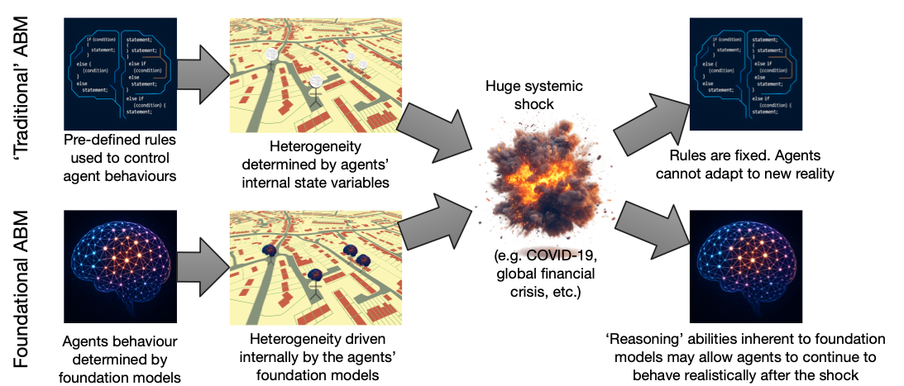

LLM4ABM SIG Meeting. 8th January 2027.
Foundation Models for Nuanced Agent Behaviours
Nick Malleson, University of Leeds, UK
n.s.malleson@leeds.ac.uk
Slides available at:
https://urban-analytics.github.io/dust/presentations.html

Talk Outline
Some ideas about whether foundation models (and/or large-language models) could be helpful for modelling agent behaviour in ABMs
Some ideas about what we need to do to allow them to be useful
Please be critical!
Context
Agent behaviours are based on historical precedents ...
Behavioural theories
Empirical evidence
Commonly implemented using:
pre-defined rules
deliberative frameworks
black box statistical models
These work well when the system is mostly in equilibrium
Context

BUT: what happens if there is a catastrophic, systemic change?
2008 global financial crisis
COVID
Models based on historical behavioural assumptions can break down
We (researchers) cannot hope to predict these events, nor how people will behave afterwards
Example: burglary simulation
What happens if the agents can't leave the house?
Large Language Models (LLMs)
Early evidence suggests that large-language models (LLMs) can be used to represent a wide range of human behaviours
Already a flurry of activity in LLM-backed ABMs
E.g. METAAGENTS, AgentSociety, Shachi, Concordia, MetaGPT ... and others ...
But efforts are emerging prototypes.
Limited peer review

Geospatial Foundation Models
Foundation models trained on spatial data (sometimes including text)
E.g. UrbanCLIP, CityFM, GeoGPT, etc.
'Transformers for spatial data'.
Place embeddings capture spatial structure and scale and can be used to perform advanced spatial reasoning.
Vision
Agents backed by foundation models
Vision
Agents backed by foundation models
Large Language Models can respond to prompts in 'believable', 'human-like' ways
Geospatial Foundation Models capture nuanced, complex spatial associations
Together, these models could allow us to create ABMs where agents behave in realistic ways even when faced with unprecedented situations
(some) Challenges
Environmental adaptability
Agent reasoning might be unbounded, but their actions are limited by the simulation environment
Environment perception
LLMs can only operate on text. Leads to highly simplified contextual descriptions.
Operational challenges
Computational complexity, validation (data leakage), calibration
Challenge 1: Environment adaptability
LLM reasoning is 'unbounded'
Generative agents can articulate any linguistically desirable response
But, in practice, their actions are currently limited to a small number of cases that model developers have presupposed.
What if my burglar agents wanted to target commercial buildings?
What if an agent is lonely during lockdown and wants to get a dog?
Potential solution: adaptive simulation environments
Dynamic simulation environments
Surprisingly little research on this!
Propose LLM-backed 'ask-detect-extend' cycle:
Ask: agent requests an environmental feature
Detect: System detects whether the feature lies outside current capabilities
Extend: If necessary, generate new functionality
Can include researcher in-the-loop for non-trivial extensions
Implementation: move from text-based world to more complex spatial environments

Challenge 2: Environment perception
Humans integrate numerous sensory cues to conceptualise their surroundings
But generative agents must have their environments described to them in text
This removes the richness and nuance from the agent's local context
Potential solution: multi-modal agents
Multi-modal agents
Couple LLMs (for reasoning) with GeoFMs (for spatial perception).
Potential solutions:
Gated cross-attention (e.g. Flamingo)
Text/image token interleaving (e.g. PaLM-E)
A separate, mini transformer (e.g. BLIP-2's Q-Former)
Training:
Freeze the main LLM & GeoFM weights and train a subset (computationally feasible)
Will need data though. Generate synthetically?
Challenge 3: Operational barriers
Computational complexity: thousands/millions of LLMs?
Solutions: cache queries, emulation, prioritise smaller models where possible, ...
This is a problem that is being actively researched by others
Calibration with no tunable parameters
Solutions: LLM fine-tuning with domain-specific data; proxy parameters that affect prompts; calibrating the environment.
Preventing data leakage in validation
LLMs have 'seen' most major historical events, so how can we validate the new approach?
Solutions: use early LLMs and pre-COVID data (e.g. 'The Pile') to test whether principle of adapting reasoning can emerge
Conclusions
ABMs will struggle to represent agent behaviours in unprecedented situations
Foundation models (LLMs, GeoFMs) offer a potential solution; allowing agents to behave in reasonable ways in novel situations
Significant technical and methodological challenges remain:
Environmental adaptability
Environment perception
Operational challenges
LLM4ABM SIG Meeting. 8th January 2027.
Foundation Models for Nuanced Agent Behaviours
Nick Malleson, University of Leeds, UK
n.s.malleson@leeds.ac.uk
Slides available at:
https://urban-analytics.github.io/dust/presentations.html